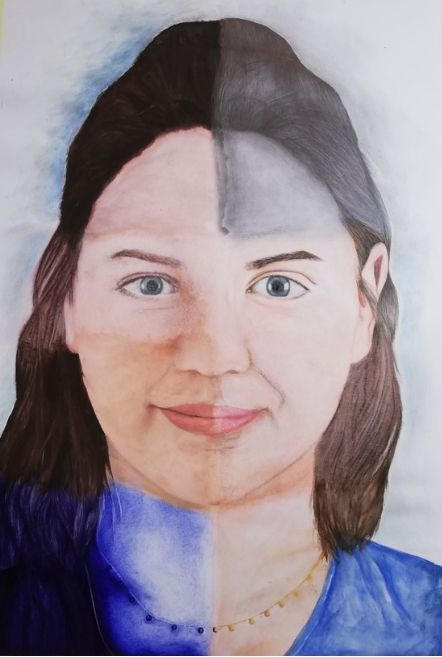
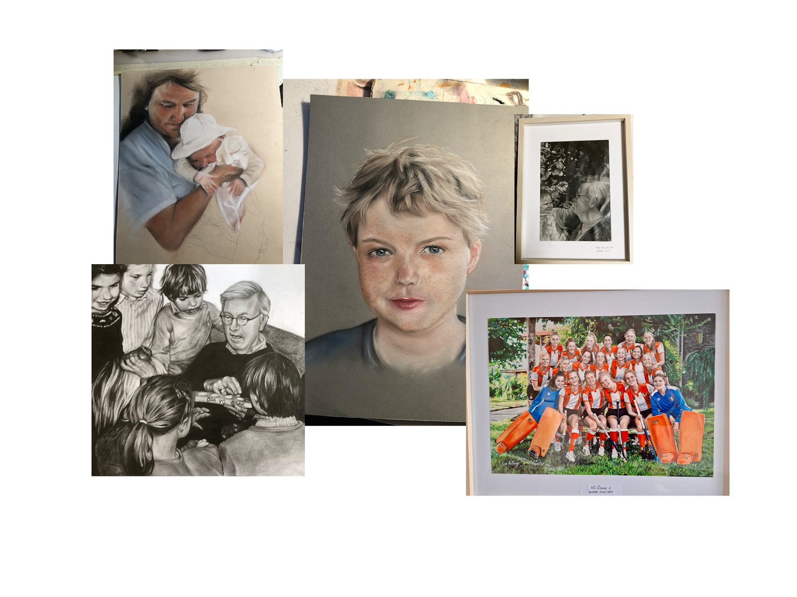

Portretten van Eva
Een digital garden over een groeiende verzameling van mijn portretten en het proces daarachter.

Een digital garden over een groeiende verzameling van mijn portretten en het proces daarachter.
Al van jongs af aan heb ik een liefde voor het tekenen van mensen en gezichten. Het begon met het perfectioneren van één oog, te zien aan de kantlijnen van mijn oude schoolschriften, stiekem volgekrabbeld tijdens bijvoorbeeld de wiskundeles. Later ging ik familiefoto's natekenen, en dat proces, steeds beter zien wie iemand is, blijft me fascineren. Ik hou vooral van de kleine details, zoals een kreukel in kleding.
Nooit les gehad, wel veel geoefend en af en toe een boek of filmpje bestudeerd. Portrettekenen is veelzijdiger dan je zou denken, en ik wil mezelf daarin graag blijven ontwikkelen, van kleurpotlood en pastel naar nieuwe technieken. Deze digital garden is mijn plek om dat proces te delen, en om anderen die ook portretten willen leren tekenen op weg te helpen.

Neem een kijkje in mijn collectie portretten. Al mijn werken zijn persoonlijk: veel portretten van familieleden, gemaakt met aandacht voor elk detail en elk gezicht.
→Bekijk het werk waar ik momenteel mee bezig ben.
→
Mijn proces begint met een goede foto, gevolgd door een schets, de opbouw van licht en schaduw, en tot slot de fijne details. Op deze pagina deel ik de artikelen en video's die mij daarbij hebben geholpen
→